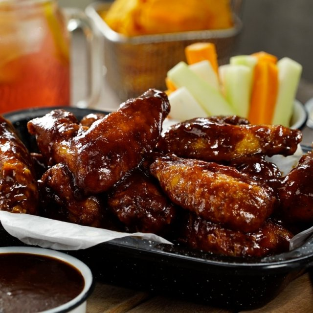
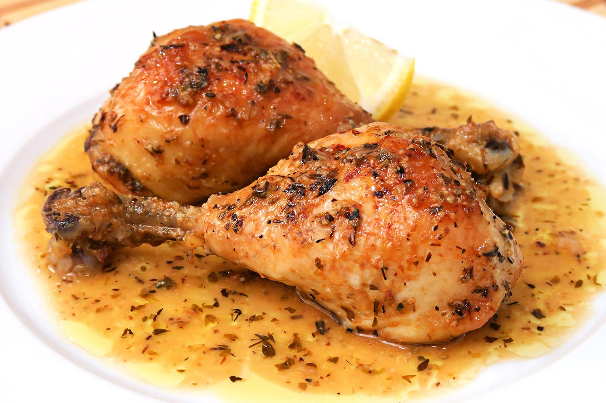

MI BLOG PERSONAL
Bienvenido a mi blog deCocina

¿Cómo empecé a cocinar?
¿De dondé surge mi pasión hacia la cocina?, Noviembre 30, 2019
Desde pequeña descubri que cocinar era lo que me entretenia, lo que elegia. Lo hacia de la mano de la mas grande y aprendia de ella... mi madre. Hoy lo sigo eligiendo, hoy me apasiona mas que nunca. Es mi hobbie y mi cable a tierra. Una apasionada del arte de la cocina. Plenitud y Felicidad pura!!!!.
¿Qué encontrarás en mi blog
Te encantará Diciembre 4, 2019
En mi blog de cocina, te explicaré todo tipo de recetas de la manera mas sencilla; cocina clásica, vanguardista, saludable e incluso rápida. Para tus comidas del día a día o para ocasiones especiales.
Busca las recetas que más te gusten y se adapten a tu estilo de vida.
Me gustaría que este fuera un sitio donde construir una pequeña comunidad para los amantes de la buena cocina.
Te espero, no olvides suscribirte para recibir las ultimas recetas y artículos.
Sobre Mí
Mi nombre es Jazuany Connell, tengo 19 años. Estudiante de química, que en sus ratos libres se apasiona por crear nuevas recetas.
Post Populares
-
 Lasagna
Lasagna
Deliciosa lasagna de carne -

Alitas BBQ
Alas de pollo que te harán chuparte los dedos -

Pollo al Horno
Rica y fácil de prepar
Etiquetas
Comida Rápida Fácil Recetas Deliciosa Postres Cocina Galletas Familia Gourmet Bebidas Asados Guarniciones Games